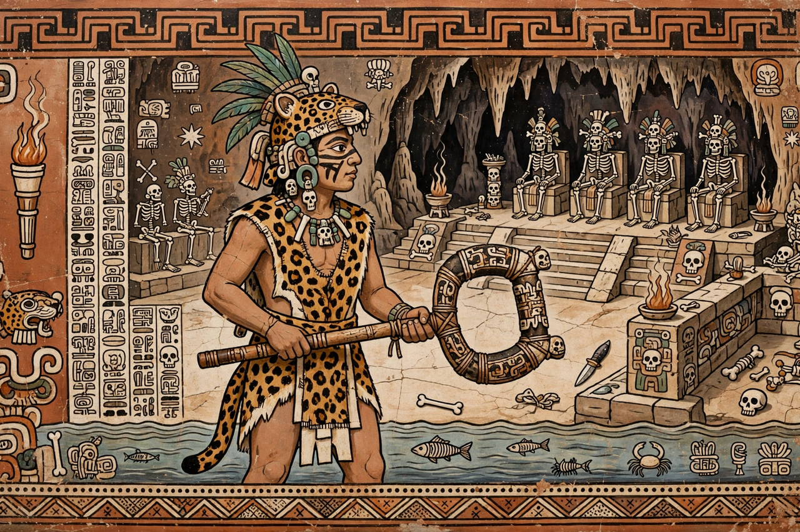

Xbalanque
| Xbalanque | |
|---|---|
| Member of | Maya Hero Twins |
| Source | Popol Vuh (K'iche' Maya) |
| Parents | Hun Hunahpu (father); Xquic (mother) |
| Twin | Hunahpu |
| Distinguishing marks | Patches of jaguar skin on face and body |

Xbalanque (K'iche': Xbʼalanke) is one of the Maya Hero Twins of the Popol Vuh, twin brother of Hunahpu and, with him, the central hero of K'iche' Maya mythology. The meaning of his name is debated — proposals include "Jaguar Sun," "Hidden Sun" and "Jaguar Deer" — and in Classic-period Maya art he is identified by the patches of jaguar skin worn on his face and body, in contrast to his brother's black spots. Where Hunahpu is the blowgunner, Xbalanque is often depicted as the more overtly warlike twin; in the Popol Vuh narrative the two act inseparably, and many of their greatest feats are Xbalanque's stratagems.
Role in the Popol Vuh
Conceived miraculously by Xquic from the skull of the sacrificed Hun Hunahpu, the twins grow up outwitting their jealous elder brothers, the monkey-artisans One Hunahpu and One Chouen, and defeat the false sun Vucub Caquix. When the lords of Xibalba summon them to the underworld ballgame, it is frequently Xbalanque who devises the escapes: the twins send a mosquito ahead to bite the lords and learn their hidden names, pass the houses of torment unharmed, and — after the bat Camazotz decapitates Hunahpu and the death lords play ball with his head — Xbalanque summons the animals, fashions a squash as a substitute head, and engineers a trick play (a rabbit released at the court's edge) that recovers the true head and restores his brother.
The final trick
The twins' victory is completed by a stratagem both share and Xbalanque is often credited with devising: foreseeing their deaths, they instruct two seers to have their bones ground and thrown into the river, then return five days later as itinerant dancers who burn houses and restore them, and sacrifice one another and revive. Summoned to perform before One Death and Seven Death, they sacrifice the two lords in earnest — and do not bring them back — thereby breaking the power of Xibalba, which thereafter receives only the guilty and the offerings of men, and can no longer seize the living at will.
Apotheosis and legacy
Having declared their names and avenged their father, the twins ascend through the earth into the sky. The Popol Vuh says they became the companions of the sun and moon — Hunahpu conventionally as the Sun and Xbalanque as the Moon, though some scholars reverse or complicate the pairing, noting Xbalanque's jaguar (nocturnal) associations. The twins were also patrons of the ballgame and appear throughout Classic Maya vase painting, and their story remains central to living Maya tradition.
See also: Hunahpu · Maya calendar · Mesoamerican religion